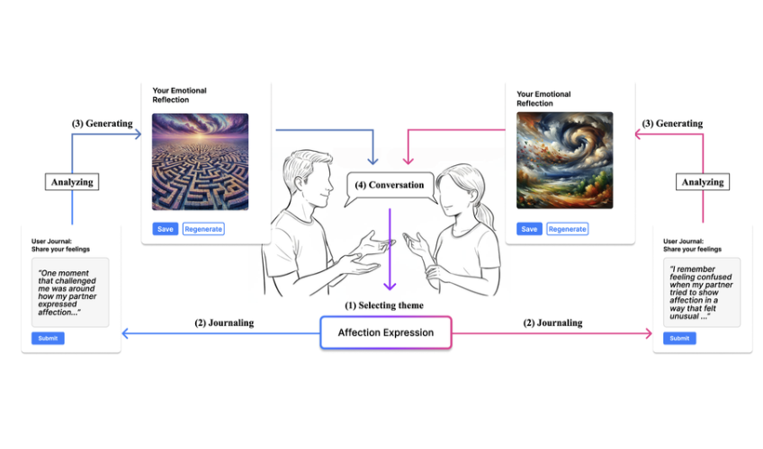
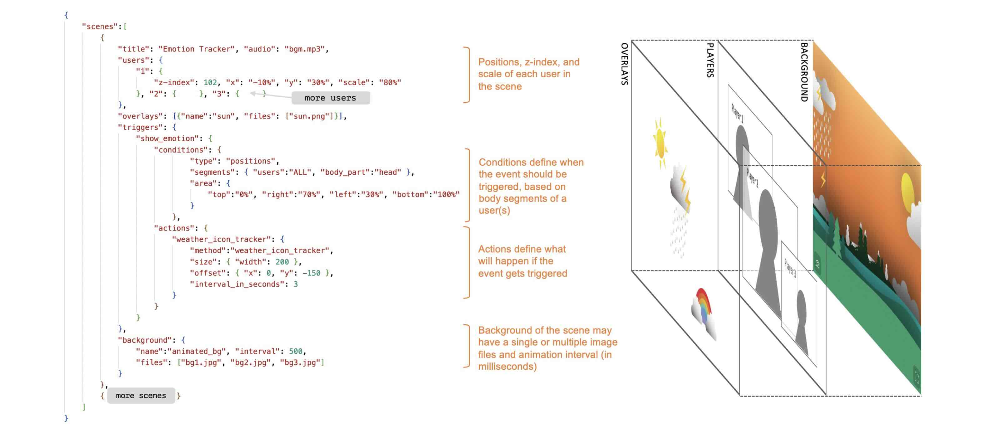
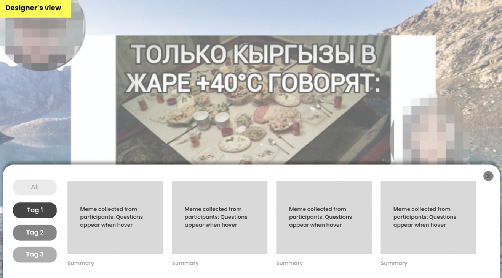
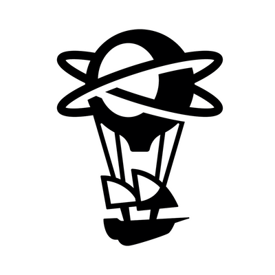

Hi, I'm Hyerin
My research focuses on how emerging technologies mediate interpersonal communication and shape the ways people express and interpret different perspectives. I aim to design technologies that bridge gaps in understanding and enable more meaningful communication across different backgrounds and experiences.
Selected Work

Unspoken into the Spoken: Visualizing Cultural Nuances in Intercultural Romantic Dyads through Generative AI-driven Art.
This research explores how generative AI can surface unspoken cultural differences and foster mutual understanding in intercultural romantic relationships.
View project →
✶ Earlier work presented at CHI 2022 Extended Abstracts · 2022
Virfie: Enhancing Remote Togetherness with User-Created Scenarios for Virtual Group Selfie
This research explores how virtual group selfies can foster creative expression, social connection, and a sense of togetherness in remote settings.
View project →
Memeterview: Meme-based culture elicitation tool for cross-cultural user studies
This research explores how internet memes can surface implicit cultural perspectives and facilitate communication in cross-cultural user research.
PromptCrafter: Crafting Text-to-Image Prompt through Mixed-Initiative Dialogue with LLM
This research explores how internet memes can surface implicit cultural perspectives and facilitate communication in cross-cultural user research.
News
Experience
Industrial design, M.S. CIXD Lab
advisor: Youn-Kyoung Lim
Design, B.F.A.
Study abroad · Computer engineering
UX Researcher · YouTube Rapid Research Team

Niantic 2022–2025UX Designer&Researcher · ARUX Team
Design Intern · Network Business Team